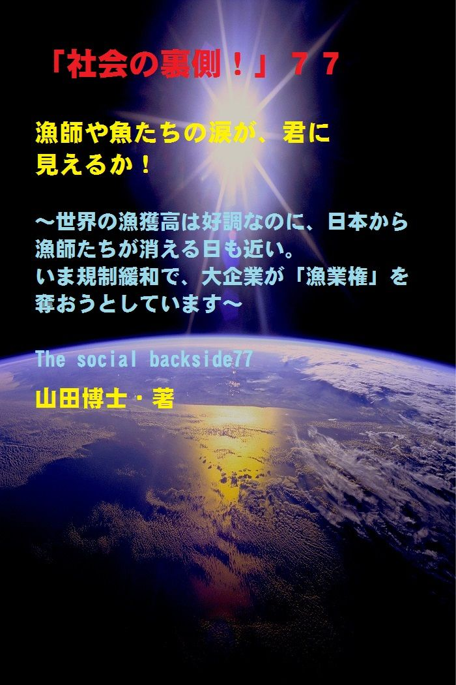

| 「社会の裏側！」７７......漁師や魚たちの涙が、君に見えるか！: 世界の漁獲高は好調なのに、日本から漁師たちが消える日も近い。いま規制緩和で、大企業が「漁業権」を奪おうとしています | |
| 山田博士 | |
| kominitesyuppankai (2017) | |

■「社会の裏側！」７７
漁師や魚たちの涙が、君に見えるか！
～世界の漁獲高は好調なのに、日本から漁師たちが消える日も近い。いま規制緩和で、大企業が「漁業権」を奪おうとしています～
The social backside77
山田博士・著
★本書の著作権について
皆さんにはまったく関係ないことだと思いますが、複写、転送、抜粋、転載など、著作権侵害にあたる行為は絶対になさらないで下さい。本書の著作権は、山田博士にあります。今後、皆さんのお役に立ちたい活動が出来なくなりますので、その点、ぜひよろしくお願いします。ささささ、それでは、本書をどうぞ、ごゆっくりご覧下さい。
★概要
いま、ぼくたちが口にするサーモン（サケ）は、ノルウェー産（養殖です！）が多いんですね。
サケが「養殖魚」だなんて、あなた、ご存じでした？(笑)
ところがそのノルウェーでも、沿岸を外国資本たちに乗っ取られてしまい、このサーモンは彼らの「利潤を生み出す装置」と変わり果ててしまいました。
ぼくたちがサケフライなどを、目を細めながら頬張っていますが、あれはほとんどがこの「ノルウェーの養殖魚」です。
多くのかたは、マグロとは異なり、このサケだけは自然のものだと思っていらっしゃるようですが......(笑)。
でも、このノルウェーと同じことが、今回のＴＰＰ（環太平洋経済連携協定）によって、より現実のものとなろうとしております（たとえ変則的なものになろうとも）。
そして、大企業たちが「漁業権」を奪おうとしているいま、沿岸の漁民たちも負けてはいません。新たな動きが出てきました。
そのあたりも、本書でどうぞ、ご覧下さい。
最近は、日本の若い人たちが魚離れをしている......と、よく言います。
でも、そんなことを言うより前に、その「魚たち自身がこの日本から離れていっている」のじゃありませんか。
違いますか。
沿岸を埋め立てて産卵場所を無くし、泣きながら日本の沿岸から去って行く魚クンたち。
魚クンよ。どうか、この日本人たちの行為を許せ！
ぼくなど、そう叫びたくなります。
ましてや、沖縄のあの美しい海を埋め立てて、外国の基地を作るなんて。
とても正気の沙汰だとは思えません。
日本を守るにしても、もっと、ほかの方法があるのじゃないですか。
いくら政治的事情があるにしても、こうした魚たちの存在をあまりにも無視している。
それに、いまの日本漁業の縮小が、なぜ起こったのか。
それは、ほかの農業なども含めて、産業構造の変化を考える必要があるでしょうね。
漁業だけの問題ではないんです。
振り返ってみれば、１９９０年以降、農業、工業、漁業などの、いわゆる第１次産業と第２次産業といわれる分野が、ずっとおろそかにされてきました。
工場などは、どんどん海外にその足場を移し、日本国内は空洞化してしまっております。
そういう環境の中で、第１次産業であるこの漁業も、まったく例外ではない......。
本書では、漁業だけじゃなく、いままでおろそかにしてきた農業、林業、そして工業などという大切な「もの作り」の大切さを、再度、ごいっしょに考えたいなと、思っています。
ささささ、それじゃ、内容をどうぞ、ご覧下さい。
★目次
★（第１章）
そのようにして、ぼくやワン君を健やかに育ててくれた魚たち。でもいま。日本の漁業は、「縮小気味」なんですね。逆に、世界では、漁業の生産量はこの５０年間というもの増え続けている。どうして、日本はこんな事態に陥（おちい）ったのか......
★（第２章）
最近は、日本の若い人たちが魚離れをしている......と、よく言われますが、そんなことを言うより前に、その「魚たち自身がこの日本から離れていっている」のじゃありませんか。違いますか......
★（第３章）
戦後の日本は、なんと「もの作りの国」を放棄してしまったのでした。それこそが、いまの漁業の衰退を招いた結果だったと言えませんか。そしてそれとともに、若者たちを中心にして「魚離れ」が進む......
★（第４章）
ところが、ほかの分野と同じく、この沿岸漁業にも、「規制緩和」という言葉が押し寄せてきたわけですね。そして、こうした「漁業権」を大企業たちに開放してしまおうという動きがあるわけです......
★「社会の裏側！」シリーズの既刊本案内
★プロフィール
（最初に、恥ずかしながら、ぼくの紹介を簡単に述べておきます）
やまだ・ひろし。
１９４７年、福井県小浜（おばま）市生まれ。
食生態学者。元大学名誉教授。日本危機管理学会会員。
山田博士いのち研究所主宰。
ベトナム戦争の終わったちょうどその年１９７５年に、マンガストーリィと商品の実名で食べものや環境を取り上げた小冊子「暮しの赤信号」を発行する。実名で取り上げたため、社会に衝撃を与えた。各号１０万部単位で読まれ、隠れたベストセラーなどと、新聞などで何度も報道される。
同じ年、偶然にも有吉佐和子さんの「複合汚染」が発表され、この小冊子はその動きも受けて多くの学校の副読本でも活用された。
文化放送の「なっちゃこワイド」や、ＮＨＫ海外放送「ある日本人」でお話しをしたり、ギター弾き語り公演や、各自治体や学校などへの講演なども続けている。
現在は、メルマガ「暮しの赤信号」（「短縮版」と「完全版」の２種）を発行し、企業名や商品名などを公表して、世界中のかたに喜ばれている。
その読者層は、医師や看護師、栄養士、教師、会社経営者、自治体など、国の内外を問わず、多くの読者たちから毎日のように便りが届いている。年齢層も、１０代から８０代まで、さまざまだ。
また、ほぼ毎月第３土曜日に、東京の恵比寿でお茶飲み会「博々亭（ひろびろてい）」を開催。遠路から毎回読者が駆けて来ている。参加条件はメルマガ読者に限定だが、参加費用は無料だ。
このメルマガは、まぐまぐ！を始め３つのスタンドの合計で、数千部発行しているが、もしご関心のあるかたは、ご覧いただくと嬉しい。読者登録をされれば、毎回、無料でお手元に届く。月～水は本誌が、木～日は『３分で分かる！今週のワンショット「暮しの赤信号」』が、それぞれ早朝５時に届けられる。その時刻を楽しみにしている読者も多いとか。
短縮版メルマガ「暮しの赤信号」は無料。
下記で登録されれば、毎回、自動的に配信される。
「短縮版」（無料です）→ http://goo.gl/AFx95J
著書に 『脱コンビニ食！』（平凡社新書）
『危険な食品』（宝島社新書）
『その食品はホンモノですか？』（三才ブックス）
『ひとり月１万円食費で幸せ生活』（ＷＡＶＥ出版）
『最新 危ないコンビニ食』（現代書館）
『あぶないコンビニ食』（三一新書）
『続 あぶないコンビニ食』（同）
『外食店健康度ランキング』（同）
『山田博士の暮しの赤信号』第１巻～第５巻（亜紀書房）
『暮しの赤信号』小冊子＆ＣＤ－ＲＯＭ版全２３巻
『月１万少々の食費で、ザクザクと健康を稼ぐぼくの方法』
『いのち運転"即実践"マニュアル』各話
『山田流・時事呆談』各話
『セーラー服と警察犬』（小説）各巻......などがある。
山田のホームページ http://yamadainochi.com/
★はじめに......
こんにちは。
山田博士（やまだ・ひろし）です。
本書をご覧いただき、嬉しく思っております。
この内容をご覧いただくことで、少しでもあなたが「社会の裏側！」の流れにお気づきになり、そしてたとえ１ミリでもいい、即、行動されることを願っております。
ただ読むだけでは、誰でもできます。
それでは、あなたの身の回りの状況は石のように動きません。
本書をご覧になって、これは......と思うことがあれば、即行動なさって下さい。
お願いします。
その小さな行動の積み重ねこそが、あなたの明日を、１２色のバラ色で輝かせることになると信じております。
なお、この「社会の裏側！」は、今後もシリーズとして発刊して行くつもりです。
もしご関心があれば、「社会の裏側！」という名前で、アマゾンで検索してお調べ下さい。
さまざまな問題の社会の裏側！を詳しく、しかも楽しく述べております。
ぼくの名前で検索されても、見つかるのではないかと思います。
もし、「ＰＤＦ版」でご希望の場合は、ぼくの事務局まで遠慮なくお問い合わせ下さい。事務局→ http://goo.gl/t12Yx
ささささ、能書きはそこまでにします。
どうぞ、笑顔で、頁をお繰（く）り下さい。
お楽しみに！
山田博士
★（第１章）
そのようにして、ぼくやワン君を健やかに育ててくれた魚たち。でもいま。日本の漁業は、「縮小気味」なんですね。逆に、世界では、漁業の生産量はこの５０年間というもの増え続けている。どうして、日本はこんな事態に陥（おちい）ったのか......
ぼくの故郷（ふるさと）は、北近畿にある日本海に面した港町。
若狭湾の一番奥の小浜湾に面した町ですので、子どものころから潮（しお）の香りが町を覆（おお）っておりました。
ぼくの実家から歩いて１０分ほどのところに、漁港があります。
当時は、いつもそこは漁師さんたちの威勢のいい声で、活気づいていましたし、それに、いま獲（と）ってきたばかりの新鮮で生きのいい魚が、いつも山積みになってピチピチと光っていた光景を、いまでもぼくは思い出すことができます。
実家には、シェパードやコリーなどの大きな犬が、いつも数匹いました。
ぼくは生まれたときから、そういうワン君たちに囲まれて健（すこ）やかにお育ちになりましたので（？）、いまも、ワン君が大好き(笑)。
でも、大きな犬のため、彼らの食べるエサの量がとても半端（はんば）じゃありません。
ぼくを含めてですが......まるで、「育ち盛りのやんちゃな高校生」が何人もいるかのようで......母も大変だったと思います。
でも、いつも母は、目を細めていました。
なぜなら......。
ぼくの家のワン君たちは、嘱託（しょくたく）警察犬でした。
そのため、いつも訓練士さんが訓練のために、家を出入りしていたのです。
でも家に来るとき、彼は漁港へ寄って、バケツに一杯の魚のアラをもらってきてくれるんですね。
自転車の片手に、バケツをぶら下げて、いつもニコニコした顔で、持ってきてくれました。
と言うのは、当時の漁港では、アラなんて、商品として考えていなかったのでしょう。
訓練士さんがひと声かければ、バケツ一杯を「無料で」もらえることができたわけなんですね。
ちなみに、このアラ。
ほかの地域ではどう呼ぶのかは知りませんが、ぼくの故郷では、魚の下ろし身を取ったあとに残った頭部や骨やエラ、ヒレ、そしてそれらに付着した肉などすべてを、そう呼んでいました。
もちろん、それらのアラは、......「ワン君のため」です。
ワン君だけが食べるための、ご馳走のはずです。
でも、ぼくの母はそんなことおかまいなし。
新鮮なうちにすぐに鍋に入れ、グッツグッツと煮込んでから、まず人間たちのお腹にしまい込むわけです。
そしてその残りの骨だけをワン君たちに与える。
いやあ、考えましたなあ(笑)。
ワン君は、言葉をしゃべれませんからね。
訓練士さんに告げ口をするわけにもいかない。
でも、その残り骨を嬉しそうにもらったワン君たち。
きっとあとで、訓練士さんに「ぼくは骨しかもらっていないぞお......」なんて、告げ口をしたかったのかもしれません。
だからきっといまでも、老いた訓練士さんは、あの当時、山田さん宅のワン君たちに新鮮なアラをご馳走したもんだったなあ。きっとあのころワン君たちは喜んだだろうなあ......と、楽しく思い出していらっしゃるのではないでしょうか。
いやあ、ぼくの母も......やりますなあ。
ぼく以上で......(笑)。
そのようにして、ぼくとワン君を健やかに育ててくれた魚たち。
でもいま。
日本の漁業は、「●●気味」なんですね（●●は下記の設問を）。
逆に、世界では、漁業の生産量はこの５０年間というもの増え続けているというのに。
どうして、こんな事態に陥（おちい）ったのか。
いま、何が起こっているのでしょうか。
あの「３．１１原発大事件」だけのせいではないような気がします。
そのあたりを、下記で、少し述べてみることにしましょうか。
それは......。
★（第２章）
最近は、日本の若い人たちが魚離れをしている......と、よく言われますが、そんなことを言うより前に、その「魚たち自身がこの日本から離れていっている」のじゃありませんか。違いますか......
ところで、ぼくたち日本人は「昔から魚をたくさん食べ続けている」。
......と思っているかたが多いと思いますが、おっととと......違うんですね(笑)。
じつは、いまほど大量に魚を食べるようになったのは、「第二次世界大戦以後」なんです。
まあ、もっとも現在は、あまり食べなくなりましたけど......。
身近のお年寄りに聞いてみて下さい。
きっと、そのかたの「親たちの世代」はそれほど魚を食べていなかったかなあ......と、おっしゃるのではないでしょうか。
考えてみれば分かります。
冷蔵庫がなくては、魚が食べられません。
すぐに腐りますからね。
保存ができません。
そうそう、ぼくの子どものころ。
台所には、大きな氷を入れて冷やす冷蔵庫がありましたなあ。
氷屋さんが頻繁（ひんぱん）に来てくれて、玄関前に止めた荷車の上で、大きなノコギリで氷をギコギコと、切ってくれていました。
あ、またまた余談が長くなりそうなので、このあたりで......(笑)。
とくに車もない山国の人なら、なおさら魚には縁がなかったでしょうね。
沿岸に住んでいるかたは四六時中、魚を食べられますが、先述したぼくの故郷のように、日本人みんながそうとは限りません。
魚が食べられるようになったのは、「冷蔵庫の普及」と二人三脚だったんですね。
そうそう、昔は、正月にタイなどを「おめでたい」なんて言いながら、食べるぐらいでしたなあ(笑)。
年配のかた、体験、ありますか（またまた余談になりそうで......）。
このように、魚が容易に手に入らない人たちにとっては、「魚は高級食」だったわけです。
ところがいまは、誰でも魚を食べることができるようになった。
それなのに今度は......(笑)。
もう笑ってしまえるほどなんですが、今度は、ぼくたち日本人自身がその魚を乱獲してしまった。
後先（あとさき）考えずに、ね。
そうした乱獲の結果として漁獲量が減少し、漁民が減少し、いまは、なんと外国からの輸入で魚をまかっている。
四方を海で囲まれた日本で、これほど滑稽（こっけい）なことがありますか。
最近は、日本の若い人たちが魚離れをしている......と、よく言います。
そんなことを言うより前に、その「魚たち自身がこの日本から離れていっている」のじゃありませんか。
違いますか。
沿岸を埋め立てて産卵場所を無くし、泣きながら日本の沿岸から去って行く魚クンたち。
魚クンよ。どうか、この日本人たちの行為を許せ！
ぼくなど、そう叫びたくなります。
ましてや、沖縄のあの美しい海を埋め立てて、外国の基地を作るなんて。
とても正気の沙汰だとは思えません。
もっと、ほかの方法があるのじゃないですか。
いくら政治的事情があるにしても、こうした魚たちの存在をあまりにも無視している。
そう思いませんか。
閑話休題（最近、頻繁に、この言葉を使っていますなあ。笑）。
いまの日本漁業の縮小が、なぜ起こったのか。
★（第３章）
戦後の日本は、なんと「もの作りの国」を放棄してしまったのでした。それこそが、いまの漁業の衰退を招いた結果だったと言えませんか。そしてそれとともに、若者たちを中心にして「魚離れ」が進む......
いまの日本漁業の縮小が、なぜ起こったのか。
それは、ほかの農業なども含めて、産業構造の変化を考える必要があるでしょうね。
漁業だけの問題ではないんです。
振り返ってみれば、１９９０年以降、農業、工業、漁業などの、いわゆる第１次産業と第２次産業といわれる分野が、ずっとおろそかにされてきました。
工場などは、どんどん海外にその足場を移し、日本国内は空洞化してしまったわけですね。
その中で、第１次産業であるこの漁業も、まったく例外ではなかった......。
そう、戦後の日本は、いまになって、なんと「もの作りの国」を放棄してしまったのでした。
それこそが、いまの漁業の衰退を招いた結果だったと言えます。
そしてそれとともに、若者たちを中心にして「魚離れ」が進む。肉類の供給量だけが伸びたわけですね。
もっとも、その肉類も、飼料は外国からの輸入です。
つまり、日本人は、自分の胃袋を外国に預けるようになったわけです。こんな「先進国」が、世界にありますか。
ほかの国たちは、一所懸命に、自分たちの国民の胃袋を守っているのに。
安保論議がいま全国で広がっていますが、国民の胃袋さえ守らなくて、いったい「何を」守ろうとするわけです？(笑)
先ほど述べたように、１９９０年度以降、日本の漁業は、沿岸や沖合や遠洋問わず、すべての場所で縮小しているわけですね。
ところが目を転じて外国を見てみますと、世界の漁業高は、増え続けております。
平均増加率は、年３．２％（近年の５０年間。２０１５年段階）。
これは、人口増加率の２倍ほどにもなっているんですね。
多くの国では、農業も、漁業も、一所懸命になって育てている。
いわば、当然のことですよね。
ぼくたちは、食べなければ生きて行けません。
ブランドものなど無くても、食べるものさえちゃんとあれば、なんとか生きてゆけます。
でも、その逆は考えられません。
そうですよね。
食糧が何も無くて、ブランドものだけに囲まれている(笑)。
それじゃ、１日でさえ、生きて行けません。
まあとにかく、一番問題なのは、「沿岸漁業」を壊す動きです。
それらの一つひとつが、日本漁業を壊す結果になっているわけですね。
沿岸にはぼくたちに馴染みの深い魚がいっぱい棲（す）んでいます。
★（第４章）
ところが、ほかの分野と同じく、この沿岸漁業にも、「規制緩和」という言葉が押し寄せてきたわけですね。そして、こうした「漁業権」を大企業たちに開放してしまおうという動きがあるわけです......
日本の沿岸は、いわゆる「漁業権」というものによって、過剰漁獲を防いできました。
そして、自然豊かな沿岸や海も守ってきたわけです。
いろいろと細かい問題はあったにしても、これは紛（まぎ）れもない事実。
ところが、ほかの分野と同じく、ここでも「規制緩和」という言葉が押し寄せてきたわけですね。
そして、こうした「漁業権」を大企業たちに開放してしまおうという動きがあるわけです。
これは、外国でも同じです。
たとえばいまぼくたちが口にするサーモン（サケ）は、ノルウェー産（養殖です！）が多いんですね。
養殖魚だなんて、ご存じでした？(笑)
ところがそのノルウェーでも、沿岸を外国資本たちに乗っ取られてしまい、このサーモンは彼らの「利潤を生み出す装置」と変わり果ててしまいました。
ぼくたちがサケフライなどを、目を細めながら頬張っていますが、あれはほとんどがこの「ノルウェーの養殖魚」です。
多くのかたは、マグロとは異なり、このサケだけは自然のものだと思っていらっしゃるようですが......(笑)。
でも、このノルウェーと同じことが、今回のＴＰＰ（環太平洋経済連携協定）によって、より現実のものとなろうとしております。
こうした大企業たちが「漁業権」を奪おうとしているいま、沿岸の漁民たちに、新たな動きが出てきました。
う～むむむ。
日本の漁民たちも、なかなか気骨がありますなあ。
まあ、そこまで追い詰められたこともあるのでしょうが、勇気のある行為ではあります。
それは、２０１５年の７月１８日のことでした。
東京都内で、ある組織の「準備会」が開かれたんですね。
つまり、「全国沿岸漁民連絡協議会」準備会の結成総会でした。
現在、日本の漁業経営体の約８０％は、２０トン以下の漁船を持つ沿岸漁業の経営体なんです。
ほとんどが零細規模なんですね。
しかし、その彼らが家族漁業と漁場を守ろうと、立ち上がりました。
その中心を担（にな）ったのが、「千葉県沿岸小型漁船漁業協同組合」だったのです。
この組合は、まあ凄い。
千葉県の外房にある１６地区の船団で作られた組合なんですが、１９６０年代に、銚子沖で傍若無人に操業していた大型の巻き網船団から、外房の小型漁船漁場の環境を守ろうと設立されたと言います。
そして、現在全部で３５０隻ほどの船があるそうですが、なんとか協定を取り交わしたものの、その違反操業をする大型巻き網船を、多くの小型船で取り囲んだりしたこともあったそう。
いやあ、どういう運動も、本当にいのちがけなんですね。
そういう歴史があるから、一歩ずつ、社会は前に動いてゆくのでしょう。
どんなことも、けっして諦（あきら）めてはいけないんですね。
近年は、回遊してくるカツオやマグロ、スルメイカなどの量が少なくなってきているようですが、それに輪を掛けるようにして燃費や資材の高騰、そして魚の価格の値下げなどにより、沿岸漁業の経営体は全国的に辛い状態です。
先述したＴＰＰが、今後もし妥結されるようになれば、より一層の魚介類の輸入が進むことでしょう（たとえ二国間の協定でも同じ）。
笑うのは、外国の大企業ばかり。
日本の漁民たちが、この国から消え去る日が、やがて来るかも？
そう思うのは、ぼくだけなのでしょうか。
漁業にとって大切なこことは、「持続可能性」なんですね。
つまり、資源を浪費してしまうのではなく、一番価値の高い段階で獲る。
そうしなければ、未来を食いつぶしてしまうことになります。子孫たちは泣くことになりますよね。
ところが、サバなど見てみますと、もう泣けるほど酷（ひど）い。
サバの「資源量」を見てみますと、もの凄く低いんですね。
つまり、その大半を、人間で言えば「０歳や１歳という未成魚」の段階で獲ってしまうからなんです。
これでは、大人のサバは育ちません。
でも、いまはそんなことを平気でしている。
枯渇（こかつ）することが分かっていても、平気でしている。
そのため、上述したような動きが漁民たちの中から出てきたわけです。
自分ひとりがいくら環境保全だからと言いながら乱獲をしないでも、ほかの漁船でそういう魚を全部捕獲していのたら、まったく意味がありませんよね。
本当は、こうした動きを政府自体が率先してするべきです。
でも、それどころか、逆にＴＰＰを進めようとしている。
いったい、海で泳いでいる魚たちの涙を知っているのかどうか。
政府の面々は一度、海の水に頭を突っ込んで、魚たちに挨拶してきてほしい。
そして、ついでに頭を海の水でよく冷やしてくるようにすると、魚たちの涙もよく分かるのじゃないでしょうか。
ぼくも、彼らの頭をちょこっと海に突っ込む手伝いぐらいは、します。でも、少し、かわいそうか（すぐに弱音を吐く山田クンです）。
ハハハ......。それじゃまた次回ね。ご機嫌よう。（山田博士）
▼設問です▼
設問→ 上記の文章を読み、下記の●●にあてはまるものを、選択語句から選んでみよ。ただし２文字とは限らない。
「日本の漁業は、『●●気味』なんですね」
【選択語句→ 拡大、縮小、不変】
■答え■
下記のとおりです。でも、先に答えを見てはいけません。
本文を再度ご覧になり、十分想像してから答えをご覧下さい。
きっとその繰り返しが、あなたの明日を輝かせることになると思っています。
答え→ 縮小
（了）
★（最後にひとこと）
ここまでお読みになって下さり、ありがとうございました。
ここで述べているような内容の最新情報を、メルマガ「暮しの赤信号」では述べております。
企業名や商品名も公表していますので、もしご関心のあるかたは、下記から登録されれば、毎回、自動的にお送りします。
「短縮版」は無料です。
毎回、早朝５時に、あなたのところへ配信します。
現在、全世界で数千部を配信しておりますが、楽しい文体が人気のようですよ。早朝５時をお待ちになっているかたも......。
その日から役立つ内容です。
「短縮版」（無料です）→ http://goo.gl/AFx95J
メルマガ上で、また、お逢いしましょう！
＝＝＝＝＝＝＝＝＝＝＝＝＝＝＝＝＝＝＝＝＝＝＝＝＝＝＝＝＝＝＝
★「社会の裏側！」シリーズの既刊本案内★
（山田博士・著）
「電子版」と「ＰＤＦ版」があります。お好みのほうで、どうぞ。
～これだけたくさん、マスコミも言わない内容が、存在します！
ご関心のあるものから、ご覧ください～
＝＝＝＝＝＝＝＝＝＝＝＝＝＝＝＝＝＝＝＝＝＝＝＝＝＝＝＝＝＝＝
★「電子版」は、レートにもよりますが、５８５円前後。
★「ＰＤＦ版」は、事務局までご連絡ください。
事務局→ http://goo.gl/t12Yx
（１冊は１０００円ですが、数が多くなればかなり
の割引をしています）
★
★
★
【１】社会の裏側！ １......子宮頸ガンワクチンで女子中高生が泣いている！
→ https://goo.gl/BMwQTm
【２】社会の裏側！ ２......ペットボトルを「ペット」にしてはいけない。新生児の男女比が驚くことになっている！
→ https://goo.gl/QuFsYz
【３】社会の裏側！ ３......牛丼店「すき家」が、従業員を貧困のどん底に！
→ https://goo.gl/YrmzNf
【４】社会の裏側！ ４......小学校の低学年児に「向精神薬」を処方する医師たち！
→ https://goo.gl/L97NJu
【５】社会の裏側！ ５......映画「世界が食べられなくなる日」。原子力、「遺組み」の現実！
→ https://goo.gl/7HwZ38
【６】社会の裏側！ ６......蚊帳（かや）に練り込まれた「毒物」ってご存じでした？
→ https://goo.gl/dMa52s
【７】社会の裏側！ ７......あなたは、放射性物質が濃縮された「エコセメント」で住宅を建てますか？
→ https://goo.gl/UbkdH4
【８】社会の裏側！ ８......いまや加工食品の甘味のほとんどは「異性化糖」だ！遺伝子組み換えコーンによるこの甘味料が日本人を壊す
→ https://goo.gl/6FNSeG
【９】社会の裏側！ ９......ＬＥＤ照明の「人体実験国」ニッポン！
→ https://goo.gl/VQWQam
【１０】社会の裏側！ １０......コーラの着色料に「発ガン性」の疑惑が出た！
→ https://goo.gl/XvNdfn
【１１】社会の裏側！ １１......「香料」のせいで死ぬ思いの人たちへ！日本人の母乳や脂肪から初めて検出された「人工のムスク」
→ https://goo.gl/UcZRzf
【１２】社会の裏側！ １２......子どもの「健康格差」が凄まじい！なんと「就学援助」の小中学生が１４２万人になった
→ https://goo.gl/nGhdnC
【１３】社会の裏側！ １３......ＴＰＰと私設法廷。じつはこの「ＩＳＤ条項」こそが日本乗っ取りの要だった！
→ https://goo.gl/QyH2ot
【１４】社会の裏側！ １４......築地市場移転の本当の狙い！この裏に、電通と日本ＴＶ、そしてＧＳ社が蠢いていた！
→ https://goo.gl/BerZHM
【１５】社会の裏側！ １５......ミツバチたちが消えたら、人間は「４年も」生きられない！
→ https://goo.gl/dRuppK
【１６】社会の裏側！ １６......偽装食品がなぜ広がるのか！阪急阪神ホテルズのニセ食材事件なんて、氷山の一角に過ぎない
→ https://goo.gl/S4k2Yu
【１７】社会の裏側！ １７......過去最大の「米偽装事件」。それは米離れの若者が原因だった！
→ https://goo.gl/Px911Z
【１８】社会の裏側！ １８......総合ビタミン剤などのサプリメントは、ガンや心疾患のリスクを高める！
→ https://goo.gl/28qECA
【１９】社会の裏側！ １９......海に漂うプラスチック破片には、人類が過去生産してきた多くの有害化学物質、とくに「ＰＯＰｓ」が含まれていた！
→ https://goo.gl/gQTmb5
【２０】社会の裏側！ ２０......高血圧症患者が、「人為的に量産」されている！
→ https://goo.gl/BjxoYz
【２１】社会の裏側！ ２１......子どもの貧困は、「日本の未来」を左右する！
→ https://goo.gl/6g38Wq
【２２】社会の裏側！ ２２......サプリメントのほとんどが、中国産になっていた！
→ https://goo.gl/zbJ4RP
【２３】社会の裏側！ ２３......食品の「製造所固有記号」の秘密。あなたにこの記号が読めるか！
→ https://goo.gl/DdohXk
【２４】社会の裏側！ ２４......ドライバーの「生活習慣病」と人身事故との関係！
【２５】社会の裏側！ ２５......武田薬品工業のニセ高血圧治療薬「ブロプレス」問題は、何を物語っているのか。その衝撃的背景！
【２６】社会の裏側！ ２６......砂糖は「炭酸飲料１缶でアウト」というＷＨＯ指針の理由とは！
【２７】社会の裏側！ ２７......なんと「発達障害児」の急増に、「農薬」が関係していた！
【２８】社会の裏側！ ２８......田中正造「真の文明は、山を荒らさず、川を荒らさず、村を破らず、人を殺さざるべし！」
【２９】社会の裏側！ ２９......治験。ネットの求人欄で、「とくに日本人」を募集するアメリカでの実態！
【３０】社会の裏側！ ３０......「味噌」が、放射性物質を除去するこの実験。世界の人に知らせたい！
【３１】社会の裏側！ ３１......「夢のリニア新幹線計画」が、日本人を壊（こわ）す４大理由！
【３２】社会の裏側！ ３２......「食べもの戦争」は、異常気候の変動でこう勃発する！
【３３】社会の裏側！ ３３......「ＳＴＡＰ細胞」大騒動と、理研コンツェルンのねらいとは！
【３４】社会の裏側！ ３４......遺伝子組み換えの「不妊サケ」が、食卓に並ぶ日が来た！
【３５】社会の裏側！ ３５......カネボウ美白化粧品や、ＤＨＣ社「ディープクレンジングオイル」にみる「医薬部外品」の陰謀とは！
【３６】社会の裏側！ ３６......食べものに「放射線」を照射すると、その食品自体から放射線が出る危険性が分かった！
【３７】社会の裏側！ ３７......原発汚染時代の、ニッポンの「魚」の食べかた！
【３８】社会の裏側！ ３８......じつは「家族農業」が、日本の飢餓リスクを救う！
【３９】社会の裏側！ ３９......遺伝子組み換え「ご飯」が、もうまもなくあなたの食卓に！
【４０】社会の裏側！ ４０......「女性の目線」に立った原発レポート！
【４１】社会の裏側！ ４１......糖尿病予備軍の人が、「熱中症」で亡くなるこの衝撃理由！
【４２】社会の裏側！ ４２......子どもの好きな食品に、これだけも遺伝子組み換え作物が使われていた。実名リスト付き！
【４３】社会の裏側！ ４３......自閉症などの発達障害は、遺伝じゃなく、農薬などの「環ホル」が原因であることが分かった！
【４４】「社会の裏側！」４４......ファッション企業の「ファーフリー」（毛皮は扱わない）の動きが広まったが、中国ではアンゴラウサギたちが今日も生きたまま！
【４５】「社会の裏側！」４５......広く使われている「人工甘味料」が、実際には、糖尿病のリスクを逆に高めていた。その衝撃的な事 実とは！
【４６】「社会の裏側！」４６......ミツバチが消えた。じつは、あなたがシックハウスや居間の殺虫剤で倒れる原因も、これと同じだった！
【４７】「社会の裏側！」４７......愛するペットに「ペットフード」を与えてはいけない！
【４８】「社会の裏側！」４８......学校給食の栄養士が「本当は」使いたくない中国食材とは！
【４９】「社会の裏側！」４９......なぜ、「栄養ドリンク剤」を未成年に禁止している国があるのか！
【５０】「社会の裏側！」５０......あなた、「老人難民」になりますか。それとも死にますか？
【５１】「社会の裏側！」５１......甘味料「Ｓｐｌｅｎｄａ」でダイエット中のかた、ご愁傷さまです！
【５２】「社会の裏側！」５２......バター不足は、「農畜産業振興機構」という天下り団体の自作自演だった！
【５３】「社会の裏側！」５３......青色「ＬＥＤ」のために、世界から日本が糾弾される日！
【５４】「社会の裏側！」５４......キレる子どもと切っても切れない食生活！
【５５】「社会の裏側！」５５......正月の「しめ縄」から、放射性物質のセシウムが年ごとに増えている現実をどう見るか！
【５６】「社会の裏側！」５６......「プチ脳梗塞」が３０代から始まっている。人生を途中下車しないための簡単な方法はこれだ！
【５７】「社会の裏側！」５７......男女両方の「不妊症状」が普遍的になった背景は、これだ！
■「社会の裏側！」５８......スマホやケータイの「人質」になってはいけない！
→ https://goo.gl/ZhR7Qp
■「社会の裏側！」５９......「コーヒーフレッシュ」に見る、日本のコピー食品事情！
→ https://goo.gl/f2LyhG
■「社会の裏側！」６０......「フクシマ３．１１」のその後！～あの日からすぐに、農産物や人体の放射性物質を測定し続けた県民たちがいた。 同じ家族でも夫のほうが数値が高いわけとは～
→ https://goo.gl/GiQyQF
■「社会の裏側！」６１......タクシー大手の「日本交通」よ、消臭剤添加の「ファブタク」なんて愚かな行為は、即お止めなさい！
→ https://goo.gl/BCFvbR
■「社会の裏側！」６２......「ペットボトル茶」を、本当のお茶だと信じて飲んでいる悲しい日本人！
→ https://goo.gl/foVzzs
■「社会の裏側！」６３......抗菌石鹸は使ってはいけない！それは当然だけど、今回の事件をきっかけに、「抗菌生活」の是非を考えようよ
→ https://goo.gl/i1NWhQ
■「社会の裏側！」６４......コンビニの「おにぎり」が腐敗しないわけ。ＰＨ調整剤の正体とは！
→ https://goo.gl/3BYY9b
■「社会の裏側！」６５......市販薬の「副作用」を、甘く見てはいけない！
→ https://goo.gl/UNsNVM
■「社会の裏側！」６６......「モンサント社」という企業を、少し考えてみようと思います！
→ https://goo.gl/XQVGtY
■「社会の裏側！」６７......次世代電力計「スマートメーター」の電磁波が、なぜこれだけも重大な影響を与えるのだろう。その具体的な数値をお伝えしよう！
→ https://goo.gl/ev8cjr
■「社会の裏側！」６８......大企業が税金を払わなくて済む凄いカラクリ。しかも消費税が、「法人税減収」を補填していた！
→ https://goo.gl/VfHVTT
■「社会の裏側！」６９......「エナジードリンク」が、なぜ死亡事故を招きやすいのか！
→ https://goo.gl/DtGmbS
■「社会の裏側！」７０......企業の「遺伝子検査」は、絶対に受けてはいけない！
→ https://goo.gl/jJ8NMm
■「社会の裏側！」７１......マーガリンが、あなたの体を溶かしている！
→ https://goo.gl/xTSx6r
■「社会の裏側！」７２......女性たちよ。マニキュアの３大化学物質に注意しなさい。ネイルサロンの美容部員たちが倒れる理由はこれだった！
→ https://goo.gl/aPRxFG
■「社会の裏側！」７３......自殺者多発の東尋坊で、数年間に５００人を救った「ちょっと待ておじさん」から学ぶ、日本人に大切なこととは！
→ https://goo.gl/Qaqyna
■「社会の裏側！」７４......夏！ 虫よけ対策、あなたならどうする？「ピレスロイド系」などにより、年間３００件の重大事故が多発中！
→ https://goo.gl/Wfggyf
■「社会の裏側！」７５......抗生物質が効かない！
→ https://goo.gl/nqYgjS
■「社会の裏側！」７６......ワン君やニャンコ嬢たちを殺してはいけない！動物を大切にしない国は、人間をも大切にしていないのです。彼らを救う３つの提案！
→ https://goo.gl/QhgCew
★もし、上記でご関心のある作品があれば、ぜひどうぞ！
「ＰＤＦ版」の場合は、事務局までご連絡ください。
お待ちしています。
事務局→ http://goo.gl/t12Yx
★奥付
■「社会の裏側！」７７......漁師や魚たちの涙が、君に見えるか！
～世界の漁獲高は好調なのに、日本から漁師たちが消える日も近い。いま規制緩和で、大企業が「漁業権」を奪おうとしています～
The social backside77
山田博士・著
第１刷発行日：2017/08/28
－－－－－－－－－－－－－－－－－－－－－－－－－－－－－－
著／山田博士
発行／山田博士いのち研究所
105-000 1 東京都港区虎ノ門２－２－５共同通信会館Ｂ１Ｆ
http://yamadainochi.com/
事務局→ http://goo.gl/t12Yx
－－－－－－－－－－－－－－－－－－－－－－－－－－－－－－